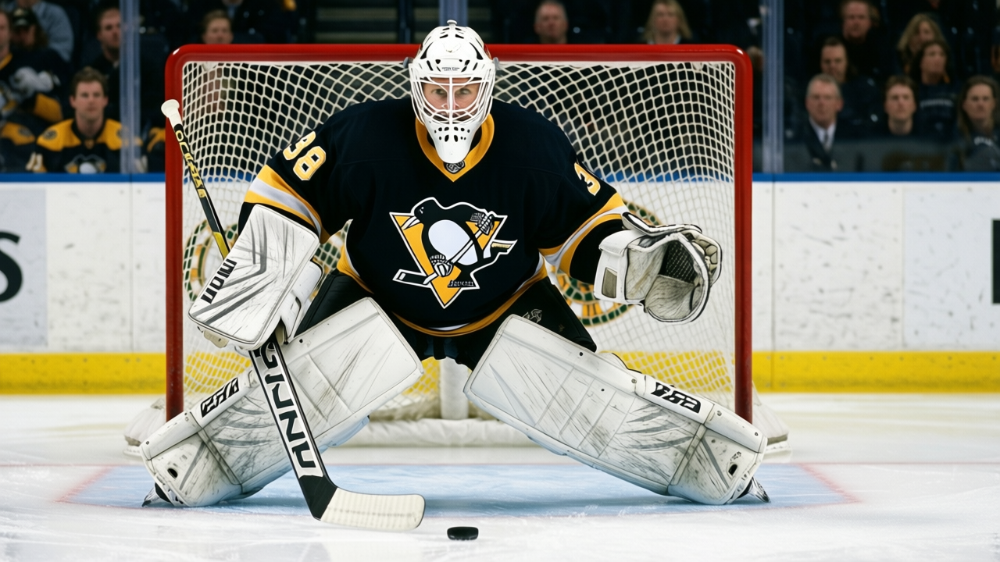

The Infirmary: Pittsburgh has lost 376 days to injury, the league's most, and it just won in overtime
The Penguins lead all clubs in both injury spells (32) and days lost (376). Six men are unavailable tonight. They beat Boston 4-3 in overtime with a goalie they sat out the previous week.
 Ray CallumSenior correspondent · Home Ice Network
Ray CallumSenior correspondent · Home Ice Network
 Pittsburgh Penguins has the worst injury ledger in the league: 32 designated spells and 376 days lost this season, ahead of
Pittsburgh Penguins has the worst injury ledger in the league: 32 designated spells and 376 days lost this season, ahead of  Tampa Bay Lightning at 302 and
Tampa Bay Lightning at 302 and  New York Islanders at 250. Six men are on the shelf right now:
New York Islanders at 250. Six men are on the shelf right now:  Martin Straka86 (wrist, return Jan 27), Brian Holzinger77 (concussion, return Jan 30), Tomas Surovy73 (back, return Feb 9), and Pasi Salminen72 (hip, return Mar 7).
Martin Straka86 (wrist, return Jan 27), Brian Holzinger77 (concussion, return Jan 30), Tomas Surovy73 (back, return Feb 9), and Pasi Salminen72 (hip, return Mar 7).
They won 4-3 in overtime at  Boston Bruins on Tuesday night, their second straight victory after a three-game losing streak in late December and early January. Pittsburgh is 12-21-5, 41 points, dead last in the Atlantic division.
Boston Bruins on Tuesday night, their second straight victory after a three-game losing streak in late December and early January. Pittsburgh is 12-21-5, 41 points, dead last in the Atlantic division.
The crease flip
 Johan Hedberg86 started in Boston. He was undressed the previous game. Sebastien Caron80 had been the G1 and dropped to G2 for the Boston Bruins contest.
Johan Hedberg86 started in Boston. He was undressed the previous game. Sebastien Caron80 had been the G1 and dropped to G2 for the Boston Bruins contest.  Jean-Sebastien Aubin78 was dropped from the squad entirely.
Jean-Sebastien Aubin78 was dropped from the squad entirely.
Hedberg has played 33 of 44 games this season, a 75 percent share. By numbers he has been the guy all year. The timing is what is odd: he sat one out, then came back for the last two, and Pittsburgh won both.
The Penguins' last 10: WWLWWLLLWW. They have outscored opponents 35-36 in that stretch. Two overtime victories and a 1-goal margin account for most of the damage done to the standings.
What the lost days cost
The 376 days are the league's single largest total. Pittsburgh's list of names reads like a depth chart: Straka, Lemieux (4 separate spells), Morozov, Tarnstrom, Willis, Meloche, Lupaschuk, Pushor, Rozsival, Eastwood, Melichar, Orpik, Beech, Caron, Hedberg, Kraft. Fifteen men have carried at least one designated injury spell.
 Mario Lemieux89 has appeared on the list 4 times, all with unspecified body parts. Martin Straka's wrist is the only first-line-caliber absence with a firm January return. Holzinger's concussion keeps him out until Jan 30 at the earliest.
Mario Lemieux89 has appeared on the list 4 times, all with unspecified body parts. Martin Straka's wrist is the only first-line-caliber absence with a firm January return. Holzinger's concussion keeps him out until Jan 30 at the earliest.
The Penguins play  Carolina Hurricanes tonight, Tampa Bay Lightning on Jan 17,
Carolina Hurricanes tonight, Tampa Bay Lightning on Jan 17,  Florida Panthers on Jan 18, and
Florida Panthers on Jan 18, and  Buffalo Sabres on Jan 21. The Tampa Bay Lightning game is the hardest ask: Tampa Bay is on a 9-game winning streak with 45 goals in the last 10 games. Pittsburgh will do it without Straka, Holzinger, Surovy, and Salminen.
Buffalo Sabres on Jan 21. The Tampa Bay Lightning game is the hardest ask: Tampa Bay is on a 9-game winning streak with 45 goals in the last 10 games. Pittsburgh will do it without Straka, Holzinger, Surovy, and Salminen.